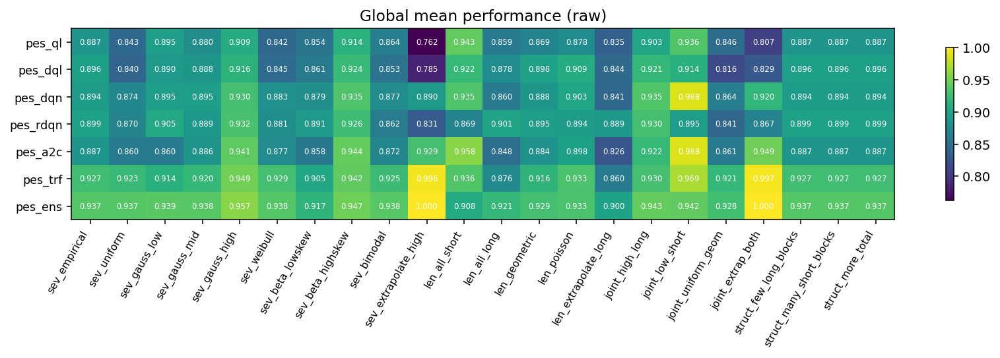
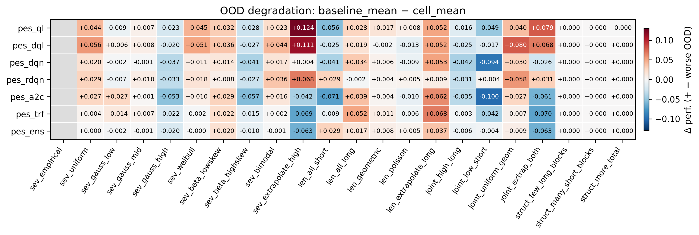
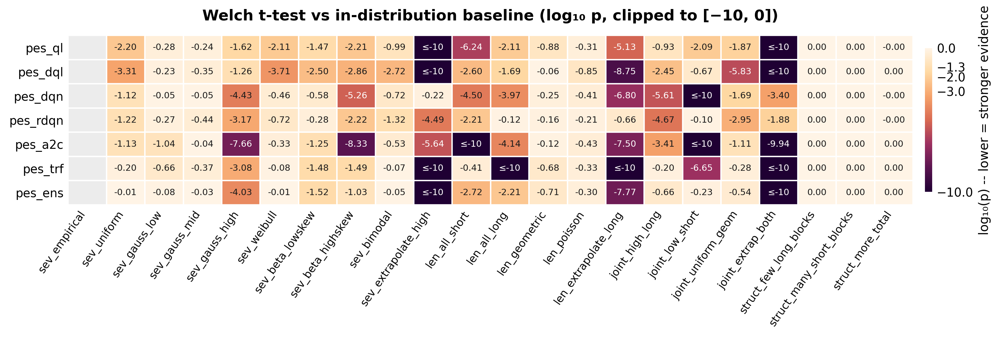
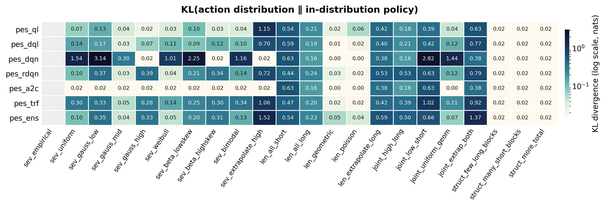

# mPES — multiple Pandemic Experiment Scenario
Multi-package Python workspace for reinforcement-learning experiments on a resource-allocation task (the Pandemic Scenario).
An agent must distribute 39 resources across ~360 trials (8 blocks × 8 sequences × 3–10 trials) to minimise disease severity. Five algorithmic variants share the same experiment framework, making side-by-side comparison straightforward.
Packages are grouped by algorithm family under two top-level directories:
| Group | Package | Algorithm | Key files |
|---|---|---|---|
tabular |
pes_base |
Tabular Q-Learning (baseline) | ext/pandemic.py, ext/train_rl.py |
tabular |
pes_ql |
Q-Learning + Bayesian optimisation (Optuna) | ext/optimize_rl.py |
tabular |
pes_dql |
Double Q-Learning, ε-decay warm-up, PBRS | ext/pandemic.py, ext/optimize_rl.py |
ml |
pes_dqn |
Deep Q-Network (experience replay + target net) | ext/dqn_model.py, ext/train_dqn.py, ext/optimize_dqn.py |
ml |
pes_rdqn |
Recurrent DQN (LSTM over trial history) | ext/rdqn_model.py, ext/train_rdqn.py, ext/optimize_rdqn.py |
ml |
pes_a2c |
Advantage Actor-Critic (A2C) | ext/ac_model.py, ext/train_a2c.py, ext/optimize_a2c.py |
ml |
pes_trf |
Causal Transformer encoder + DQN (sliding window) | ext/transformer_model.py, ext/train_transformer.py, ext/optimize_tr.py |
ml |
pes_ens |
Ensemble (soft voting of pes_dqn + pes_rdqn + pes_trf; pes_a2c configured but disabled by default) | ext/ensemble_model.py |
| — | utils |
Shared helpers (shell scripts) | linux/run_bayesian_opt.sh, win/run_bayesian_opt.ps1, config/.pylintrc |
<group>/<pkg>/ # <group> is `tabular` or `ml`
├── __init__.py # Config re-exports, ANSI codes, numpy/TF setup
├── __main__.py # Experiment entry point (blocks/sequences/trials)
├── config/CONFIG.py # All tuneable constants
├── doc/ # Markdown & HTML documentation
├── ext/ # Core algorithms (Gym env, training, optimisation)
├── inputs/ # Generated data (date-stamped subdirs)
├── outputs/ # Logs and results (date-stamped subdirs)
└── src/ # Support modules
├── exp_utils.py # Severity calculations, sequence helpers
├── log_utils.py # Dual-stream logging (console + file)
├── pygameMediator.py # Pygame UI bridge
├── result_formatter.py# Matplotlib result plots
└── terminal_utils.py # Rich console output (header, section, info…)
The workspace also includes a top-level doc/ folder with cross-package
comparison material (e.g. doc/comparacion_modelos.md).
| Dependency | Version |
|---|---|
| Python | 3.12 (Windows & Linux) |
| TensorFlow | 2.21.0 |
| Keras | 3.13.2 |
| NumPy | 2.4.3 |
| matplotlib | 3.10.8 |
| scipy | 1.17.1 |
| Optuna | 4.7.0 |
| Gymnasium | 1.2.3 |
| Pygame | 2.5.2 |
# Linux
python3 -m venv linux_mpes_env
source linux_mpes_env/bin/activate
# Windows (PowerShell)
python -m venv win_mpes_env
win_mpes_env\Scripts\Activate.ps1
pip install -r utils/config/requirements.txt
Set these before running training or optimisation:
| Variable | Value | Purpose |
|---|---|---|
VIRTUAL_ENV |
Path to active venv | Prevents __init__.py interactive prompt |
PYTHONIOENCODING |
utf-8 |
Avoids UnicodeEncodeError on Windows |
TF_ENABLE_ONEDNN_OPTS |
0 |
Suppresses oneDNN info messages |
python -m tabular.pes_base # Tabular Q-Learning
python -m tabular.pes_ql # Q-Learning (Bayesian-tuned)
python -m tabular.pes_dql # Double Q-Learning + PBRS
python -m ml.pes_dqn # Deep Q-Network
python -m ml.pes_rdqn # Recurrent DQN (LSTM)
python -m ml.pes_a2c # Advantage Actor-Critic (A2C)
python -m ml.pes_trf # Causal Transformer DQN
python -m ml.pes_ens # Ensemble (soft voting of dqn+a2c+rdqn+trf, no training)
# --- Tabular models ---
python -m tabular.pes_base.ext.train_rl 1000000 # Baseline (1M episodes)
python -m tabular.pes_ql.ext.train_rl 1000000 # Q-Learning (Optuna best params)
python -m tabular.pes_dql.ext.train_rl 1000000 # Double Q-Learning + PBRS
# --- Deep-learning models ---
python -m ml.pes_dqn.ext.train_dqn 175000 # Deep Q-Network
python -m ml.pes_rdqn.ext.train_rdqn 175000 # Recurrent DQN (LSTM)
python -m ml.pes_a2c.ext.train_a2c 175000 # Advantage Actor-Critic
python -m ml.pes_trf.ext.train_transformer 175000 # Causal Transformer DQN
# Note: pes_ens has no training phase; it loads pre-trained sibling models.
# Linux
./utils/linux/run_bayesian_opt.sh bayesian 100 # pes_ql, 100 trials
./utils/linux/run_bayesian_opt.sh dql 100 # pes_dql
./utils/linux/run_bayesian_opt.sh dqn 30 # pes_dqn
./utils/linux/run_bayesian_opt.sh rdqn 30 # pes_rdqn
./utils/linux/run_bayesian_opt.sh ac 30 # pes_a2c
./utils/linux/run_bayesian_opt.sh transformer 30 # pes_trf
# Windows (PowerShell)
.\utils\win\run_bayesian_opt.ps1 bayesian 100
.\utils\win\run_bayesian_opt.ps1 dqn 30
.\utils\win\run_bayesian_opt.ps1 ac 30
[resources_left (9–39), trial_number (0–10), severity (0–9)] → 3,410 states-1e9)new_severity = 1.4 × initial_severity − 0.4 × resources_allocatedExperimento (1)
├── Bloque (8)
│ ├── Secuencia / Mapa (8)
│ │ ├── Trial / Ciudad (3–10)
│ │ │ └── Decisión de Recursos (0–10)
Each package ships its own in-depth Markdown documentation under
<group>/<pkg>/doc/ (Spanish), with matching HTML renderings (KaTeX
math, dark-mode CSS). The workspace-level doc/ folder hosts the
cross-package comparison material. Regenerate the HTML with:
python utils/scripts/_export_html.py # all packages + workspace doc
python utils/scripts/_export_html.py pes_dqn # single package (short name)
python utils/scripts/_export_html.py ml/pes_dqn # single package (grouped name)
python utils/scripts/_export_html.py doc # workspace-level doc/ only
To update both source-level docstrings and the Markdown docs from the
current code, use the workflow described in
.github/prompts/update-pkg-docs.prompt.md.
The general/ harness runs every model against a catalogue of 22
out-of-distribution scenarios (severity / length / joint / structural
families) and aggregates the results into eight matrix_*.csv files
plus four heatmaps under general/results/. The full sweep is 154
cells (7 models × 22 scenarios). See
general/results/benchmark_report.md
for the detailed numerical analysis.
python -m general.scripts.orchestrate # full 154-cell sweep
python -m general.scripts.progress # live progress bars + ETA
python -m general.scripts.aggregate # build matrix_*.csv from raw/
python -m general.scripts.plot_matrix # render heatmaps
python -m general.scripts.report # generate benchmark_report.md
| Metric | Heatmap |
|---|---|
| Global mean performance |  |
OOD degradation vs sev_empirical |
 |
| Welch test −log10(p) (significance of shift) |  |
| Action-distribution KL vs baseline |  |
Overall ranking (mean performance across the 22 scenarios):
pes_ens (0.937) > pes_trf (0.927) > pes_rdqn (0.899) ≈
pes_dqn (0.894) ≈ pes_dql (0.893) > pes_a2c (0.887) ≈
pes_ql (0.887). The ensemble is the only model that stays
≥ 0.90 in every scenario.
Best single (non-ensemble) model: pes_trf — the only standalone
model that improves under the toughest extrapolations
(sev_extrapolate_high, joint_extrap_both) with very-large positive
effect sizes (Cohen's d > +2).
Most fragile: pes_dql and pes_ql — largest mean degradation,
only models with d < −1.5 on multiple scenarios; pes_ql collapses
to a worst-sequence performance of 0.168 on joint_low_short.
Three universal stressors (p < 0.001 across all 7 models):
sev_extrapolate_high, len_extrapolate_long, joint_extrap_both.
These should be treated as the headline benchmark cells.
Three control columns (struct_few_long_blocks,
struct_many_short_blocks, struct_more_total): degradation = 0,
p = 1.0, KL = 0 — they validate the harness and metric invariance
under block-count rearrangement rather than measure transfer.
Hidden caveat — pes_a2c: action-distribution KL is exactly
zero on every severity scenario despite competitive scores. This
signals partial policy collapse onto a robust default action
sequence, not genuine context-conditioning.
Tail-risk: pes_ens keeps a worst-sequence floor ≥ 0.57 across
the entire 22 × 64 grid; pes_trf ≥ 0.55. They are the safest
choices when worst-case behaviour matters more than average
performance.
Family takeaways:
len_extrapolate_long
degrades all 7 models).Private repository — all rights reserved.